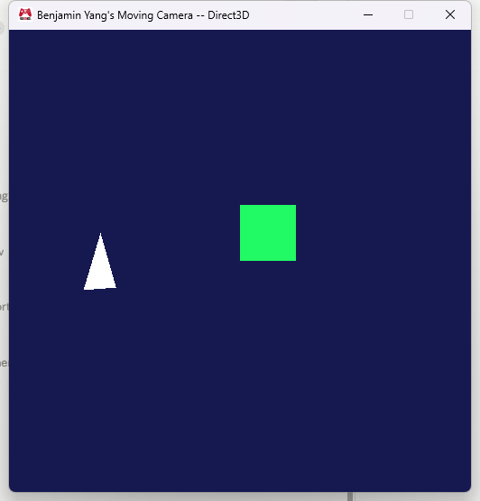
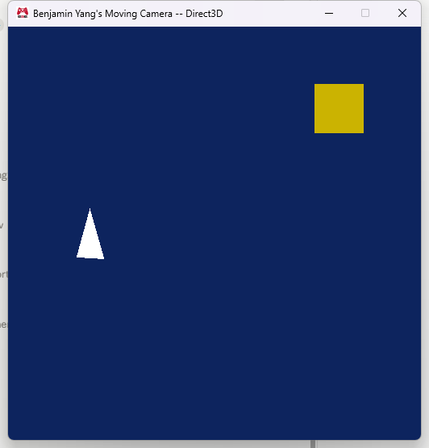
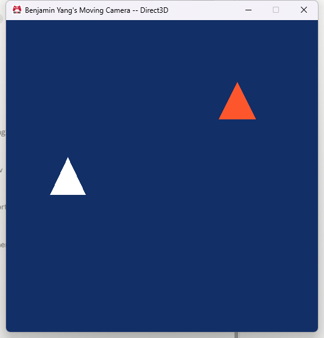
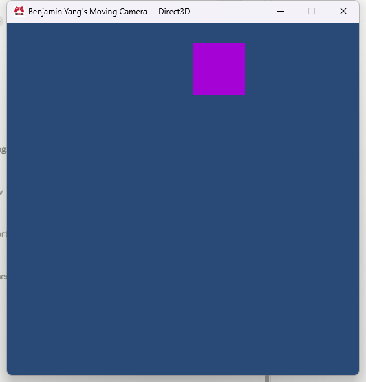
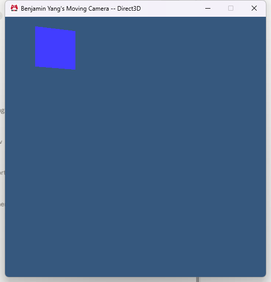
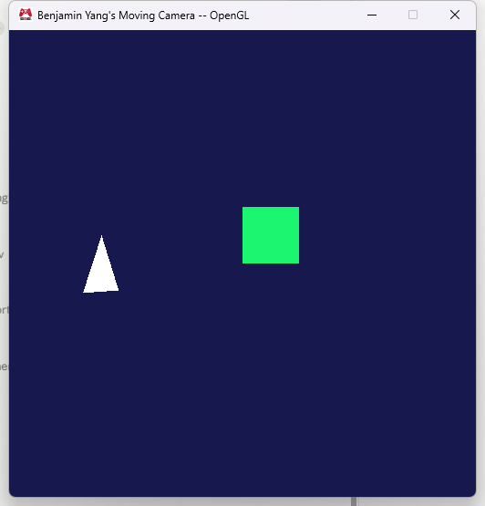

Assignment 05
A camera, game objects that move, a draw-call constant buffer and shaders written once for both platforms
MyGame.exe. ESC closes the game. Arrow keys move the colored object, hold SPACE to give it the triangle mesh, hold SHIFT to draw it white. W/A/S/D move the camera and Q/E turn it.
Screenshots






The camera
A camera is a rigid body plus the numbers that describe its lens. It lives in the game project as cCamera (cCamera.h / cCamera.cpp):
class cCamera
{
public:
// Movement (velocity is given relative to where the camera is facing)
void SetVelocity_local( const float i_right, const float i_up, const float i_forward );
void SetAngularSpeed_yaw( const float i_radiansPerSecond );
void Update( const float i_secondCountToIntegrate );
// Transforms for rendering (position and orientation are extrapolated)
Math::cMatrix_transformation GetWorldToCameraTransform( const float i_secondCountToExtrapolate ) const;
Math::cMatrix_transformation GetCameraToProjectedTransform() const;
Physics::sRigidBodyState rigidBodyState;
float verticalFieldOfView_inRadians = Math::ConvertDegreesToRadians( 45.0f );
float aspectRatio = 1.0f; // width / height
float z_nearPlane = 0.1f;
float z_farPlane = 100.0f;
};Reusing sRigidBodyState means the camera moves and turns exactly like any other object: input sets a velocity (and an angular speed around the local y axis), Update() integrates it at the simulation rate, and the two transform functions extrapolate before building the matrices. The world-to-camera matrix comes from cMatrix_transformation::CreateWorldToCameraTransform( orientation, position ) and the projection from CreateCameraToProjectedTransform_perspective( fov, aspect, near, far ). The aspect ratio is read from the window resolution in cMyGame::Initialize(), so it stays correct if the window size in settings.ini changes.
"Forward" for a camera is its local -z axis, so SetVelocity_local( right, up, forward ) builds the local vector (right, up, -forward) and rotates it by the current orientation to get a world-space velocity. That is what makes W still mean "the way I am looking" after the camera has been turned with Q or E.
The game object
A game object is where something is and how it moves, what shape it has, and how it is drawn. It is a plain struct in the game project, sGameObject (sGameObject.h):
struct sGameObject
{
Physics::sRigidBodyState rigidBodyState;
Graphics::cMesh* mesh = nullptr;
Graphics::cEffect* effect = nullptr;
void SetMesh( Graphics::cMesh* const i_mesh ); // takes a reference, releases the old one
void SetEffect( Graphics::cEffect* const i_effect ); // same
void Update( const float i_secondCountToIntegrate ) { rigidBodyState.Update( i_secondCountToIntegrate ); }
void SubmitToBeRendered( const float i_secondCountToExtrapolate ) const
{
if ( mesh && effect )
{
Graphics::SubmitMeshToDraw( mesh, effect, rigidBodyState.PredictFutureTransform( i_secondCountToExtrapolate ) );
}
}
void CleanUp() { SetMesh( nullptr ); SetEffect( nullptr ); }
};The three data members are the whole representation. rigidBodyState holds position, velocity, acceleration, orientation and angular velocity; the game only ever writes the velocity (arrow keys) or the angular speed (the spinner) and lets the physics struct do the rest. mesh and effect are pointers to reference counted assets: the object increments the count when it takes one and decrements it when it lets go, so the same mesh can be shared by several objects (the spinner and the player both use the triangle mesh while SPACE is held) and nothing is deleted while an object still uses it. I made it a struct with public data instead of a class with accessors because a game object is game data that the game changes directly; the small member functions are there so the reference counting and the extrapolation are written in one place.
The game owns two of them plus the camera:
cCamera m_camera;
sGameObject m_object_player; // arrow keys, SPACE swaps its mesh, SHIFT swaps its effect
sGameObject m_object_spinner; // a white triangle that rotates on its ownSubmitting a frame
The graphics interface gained one function and one parameter:
void SubmitCamera( const Math::cMatrix_transformation& i_transform_worldToCamera,
const Math::cMatrix_transformation& i_transform_cameraToProjected );
cResult SubmitMeshToDraw( cMesh* const i_mesh, cEffect* const i_effect,
const Math::cMatrix_transformation& i_transform_localToWorld );This is cMyGame::SubmitDataToBeRendered() in full:
void eae6320::cMyGame::SubmitDataToBeRendered( const float i_elapsedSecondCount_systemTime, const float i_elapsedSecondCount_sinceLastSimulationUpdate )
{
// Background color (unchanged from Assignment 04)
{
...
Graphics::SubmitBackgroundColor( red, green, blue );
}
// Camera
{
Graphics::SubmitCamera( m_camera.GetWorldToCameraTransform( i_elapsedSecondCount_sinceLastSimulationUpdate ),
m_camera.GetCameraToProjectedTransform() );
}
// Objects
{
m_object_player.SubmitToBeRendered( i_elapsedSecondCount_sinceLastSimulationUpdate );
m_object_spinner.SubmitToBeRendered( i_elapsedSecondCount_sinceLastSimulationUpdate );
}
}The graphics system does not know what a camera or a game object is. SubmitCamera() copies the two matrices straight into the frame constant data (sFrame::g_transform_worldToCamera and g_transform_cameraToProjected), which was already being sent to the GPU once per frame; the position, orientation, field of view and planes stay in the game. SubmitMeshToDraw() copies the local-to-world matrix into the frame's list next to the mesh and effect pointers. The extrapolation happens on the game side, before submission, so the renderer never has to know about velocities either.
Input is handled the same way as before, only it now sets velocities instead of booleans. UpdateSimulationBasedOnInput() reads the keys and writes rigidBodyState.velocity (arrow keys, 2 units per second), the camera's local velocity (W/A/S/D, 3 units per second) and its yaw speed (Q/E, 1 radian per second); it also swaps the player's mesh or effect while SPACE or SHIFT is held. UpdateSimulationBasedOnTime() calls Update() on the camera and both objects with the fixed time step. Nothing about positions is decided when a key is pressed; the key only says how fast to go.
The draw-call constant buffer
Graphics.cpp now has two constant buffer objects. s_constantBuffer_frame (register b0 / binding 0) is updated once per frame as before. s_constantBuffer_drawCall (ConstantBufferTypes::DrawCall, register b2 / binding 2) holds ConstantBufferFormats::sDrawCall, which is a single cMatrix_transformation g_transform_localToWorld. Both are initialized and bound once in Graphics::Initialize() and cleaned up in Graphics::CleanUp(); the draw-call one is only bound to the vertex shader because that is the only stage that needs the transform. The render loop became:
for ( uint16_t i = 0; i < frameData.meshToDrawCount; ++i )
{
const auto& meshToDraw = frameData.meshesToDraw[i];
s_constantBuffer_drawCall.Update( &meshToDraw.constantData_drawCall );
meshToDraw.effect->Bind();
meshToDraw.mesh->Draw();
}The frame data struct's per-object entry grew from two pointers to this:
struct sMeshToDraw
{
ConstantBufferFormats::sDrawCall constantData_drawCall; // 64 bytes (one float4x4)
cMesh* mesh = nullptr; // 8 (x64) / 4 (x86)
cEffect* effect = nullptr; // 8 / 4
} meshesToDraw[g_maxMeshesPerFrame]; // 64 entries| Direct3D (x64) | OpenGL (x86) | |
|---|---|---|
| sizeof(sDrawCall) | 64 bytes | 64 bytes |
| sizeof(sMeshToDraw), cached per draw call | 80 bytes | 72 bytes |
| sizeof(sDataRequiredToRenderAFrame) | 5288 bytes | 4772 bytes |
| two of them | 10576 bytes | 9544 bytes |
So each draw call caches 80 bytes on x64 (72 on x86), measured with sizeof() in a temporary log message: the 64 byte matrix plus the two pointers, with no padding because the matrix is 4 byte aligned floats and the pointers follow it. The whole frame struct is 144 (sFrame) + 16 (background color) + 64 x 80 (draw calls) + 2 (count) = 5282, padded to 5288 for the pointers; on x86 it is 144 + 16 + 64 x 72 + 2 = 4770, padded to 4772. That is still static memory and still nothing is allocated per frame.
I cache the matrix rather than the rigid body state or a pointer to the game object for two reasons. A pointer would tie the renderer's frame to game memory that the application thread keeps changing (and could free), which is exactly what the double-buffered submission is meant to avoid. And caching the rigid body state (position, velocity, acceleration, orientation, axis, speed: 56 bytes) would save eight bytes per draw call but would move the extrapolation into the renderer, which then needs to know how much time to extrapolate by and how to build the matrix; the matrix is the one thing the GPU actually needs, so it is what gets cached.
Shaders written once
All of the platform differences now live in shaders.inc. It #defines the HLSL type names for GLSL (float2, float3, float4, float4x4), a DeclareConstantBuffer( name, id ) macro that expands to cbuffer name : register( b<id> ) or layout( std140, binding = <id> ) uniform name, a MultiplyMatrixVector( m, v ) macro that expands to mul( m, v ) or ( m * v ), and then declares both constant buffers once:
DeclareConstantBuffer( g_constantBuffer_frame, 0 )
{
float4x4 g_transform_worldToCamera;
float4x4 g_transform_cameraToProjected;
float g_elapsedSecondCount_systemTime;
float g_elapsedSecondCount_simulationTime;
float2 g_padding;
};
DeclareConstantBuffer( g_constantBuffer_drawCall, 2 )
{
float4x4 g_transform_localToWorld;
};With that, the only thing left inside a #if defined( EAE6320_PLATFORM_D3D ) in a shader file is the entry point signature (HLSL declares inputs and outputs as parameters with semantics, GLSL as globals with layout locations), plus one line at the end of the vertex shader because HLSL writes the projected position to its SV_POSITION output while GLSL writes gl_Position. The body of main() is shared:
{
// Transform the local vertex into world space
float4 vertexPosition_world;
{
float4 vertexPosition_local = float4( i_vertexPosition_local, 1.0 );
vertexPosition_world = MultiplyMatrixVector( g_transform_localToWorld, vertexPosition_local );
}
// Calculate the position of this vertex projected onto the display
float4 vertexPosition_projected;
{
float4 vertexPosition_camera = MultiplyMatrixVector( g_transform_worldToCamera, vertexPosition_world );
vertexPosition_projected = MultiplyMatrixVector( g_transform_cameraToProjected, vertexPosition_camera );
}
#if defined( EAE6320_PLATFORM_D3D )
o_vertexPosition_projected = vertexPosition_projected;
#elif defined( EAE6320_PLATFORM_GL )
gl_Position = vertexPosition_projected;
#endif
}The two fragment shaders (white and animated color) have a single shared body each. The GLSL side is run through mcpp by the shader builder, so I checked the generated data/shaders/vertex/standard.shader in the OpenGL build: the macros expand to exactly the hand-written GLSL from Assignment 04 with the extra uniform block and multiplication.
Why extrapolate
The simulation runs at a fixed rate, 15 updates per second in this engine (GetSimulationUpdatePeriod_inSeconds() returns 1/15), while frames are rendered as fast as the display allows, 60 or more per second. If SubmitDataToBeRendered() simply submitted rigidBodyState.position, four or more consecutive frames would show the object in the same place and then it would jump by a whole simulation step's worth of movement (2 units per second / 15 = 0.13 units for the player, 0.2 units for the camera). At 60 Hz that is a visible stutter, and it gets worse the faster things move.
The application passes i_elapsedSecondCount_sinceLastSimulationUpdate into the submit function: how much real time has passed since the simulation last ran, somewhere between 0 and 1/15 of a second. PredictFuturePosition( t ) returns position + velocity x t, and PredictFutureOrientation( t ) does the same with the angular speed, so every rendered frame shows where the object should be right now, not where it was at the last simulation tick. That is what makes the square glide instead of step, and it is why the camera transform is extrapolated too: a stuttering camera makes the whole world stutter.
The cost is that the renderer is showing a prediction. If the velocity changes at the next simulation update (a key is released), the object was drawn slightly past where the simulation will put it and snaps back by at most one frame's worth of movement. In practice that is not noticeable at these speeds, and it is far better than the alternative; interpolation between the two previous states would remove the snap but would show everything one simulation step (67 ms) late.
Notes
- Depth testing and depth writing are enabled in the effect's render state now that objects have real depth, and both triangle sides are drawn so the spinner stays visible when its back faces the camera.
- The spinner is driven entirely by
sRigidBodyState: angularVelocity_axis_local is (0, 1, 0) and angularSpeed is 0.8 rad/s; nothing in the game touches its orientation directly, and its orientation is extrapolated withPredictFutureTransform()like the position. - Camera and game object are in the MyGame project (cCamera.h/.cpp, sGameObject.h) rather than in the engine, because the engine's Graphics project should not depend on Physics and the input mapping is game specific. Both only use engine types, so they can be moved into an engine project later without changes.
- ExampleGame, which submits no camera and no objects, still builds, runs and exits cleanly (it shows a black window with identity transforms).
- All four configurations build from scratch with no warnings, both platforms render identically, and ESC in a debug build exits with no reference count asserts.